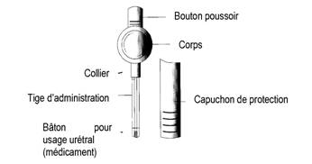

RÉSUMÉ DES CARACTÉRISTIQUES DU PRODUIT
ANSM - Mis à jour le : 19/11/2013
MUSE 1000 microgrammes, bâton pour usage urétral
2. COMPOSITION QUALITATIVE ET QUANTITATIVE
Chaque bâton pour usage urétral contient 1000 microgrammes d'alprostadil.
Pour la liste complète des excipients, voir rubrique 6.1.
Bâton pour usage urétral.
MUSE est un système stérile intra-urétral à usage unique qui délivre de l'alprostadil au niveau de l'urètre chez l'homme. L'alprostadil mis en suspension dans du macrogol est façonné en un bâton pour usage urétral (1,4 mm de diamètre sur 3 mm ou 6 mm de long) situé à l'extrémité de l'applicateur en polypropylène.

4.1. Indications thérapeutiques
Traitement des troubles de l'érection d'étiologie essentiellement organique.
En association à d'autres tests lors du diagnostic et de la prise en charge des troubles de l'érection.
4.2. Posologie et mode d'administration
Traitement de la dysfonction érectile
Instauration du traitement : Chaque patient devra être formé par un médecin en vue de maîtriser la technique d'administration correcte de MUSE.
Posologie
La dose initiale recommandée est de 500 microgrammes.
Celle-ci peut être augmentée par paliers (à 1000 μg), ou diminuée (à 250 ou 125 μg) sous surveillance médicale jusqu'à l'obtention d'une réponse satisfaisante.
Il est recommandé de ne pas dépasser deux doses par 24 heures, et de ne pas utiliser plus de sept doses par période de sept jours. La dose prescrite ne devra pas être dépassée.
Mode d'administration
Après vérification de la maîtrise de la technique d'administration par le patient, la dose retenue peut être prescrite pour l'auto-administration à domicile.
Il est important que le patient urine avant l'introduction du produit car l'humidification urétrale facilite l'administration de MUSE et est essentielle à la dissolution du principe actif.
Pour l'administration, enlever le capuchon de protection de l'applicateur, étirer complètement le pénis au maximum de sa longueur vers le haut et introduire la tige de l'applicateur dans l'urètre.
Appuyer sur le bouton poussoir pour expulser le produit de l'applicateur et retirer celui-ci de l'urètre (avant de retirer l'applicateur, effectuer un mouvement de va et vient latéral afin de s'assurer que le produit a bien été libéré de la tige d'administration).
Faire rouler le pénis entre la paume des mains pendant 10 secondes au minimum pour assurer une distribution homogène du médicament sur la paroi de l'urètre.
En cas d'apparition d'une sensation de brûlure, il convient de poursuivre cette manœuvre de friction par roulement pendant 30 à 60 secondes ou jusqu'à disparition de la sensation de brûlure. L'érection survient 5 à 10 minutes après l'administration et persiste pendant 30 à 60 minutes environ. Après l'administration de MUSE, il est important de s'asseoir, ou de préférence se mettre debout et marcher, pendant 10 minutes environ jusqu'à l'installation de l'érection.
Des instructions détaillées sont présentées dans la notice d'information destinée au patient.
Lors de l'utilisation à domicile, il est conseillé de vérifier régulièrement l'efficacité et la tolérance.
Ne pas dépasser la dose prescrite.
En association à d'autres tests lors du diagnostic et de la prise en charge des troubles de l'érection
L'administration de MUSE peut être couplée à un examen echo-doppler dans le bilan de la fonction vasculaire pénienne.
Il a été montré que l'administration d'une dose de 500 μg de MUSE permettait d'obtenir des effets identiques à ceux d'une injection intra caverneuse de 10 μg d'alprostadil sur la vasodilatation artérielle et sur la vitesse maximale du débit systolique au niveau du pénis.
Il convient de s'assurer de la disparition de l'érection avant d'autoriser le départ du malade.
Utilisation chez le sujet âgé
Aucun ajustement posologique en fonction de l'âge n'est nécessaire.
MUSE est contre-indiqué dans les situations suivantes:
· hypersensibilité à la substance active ou à l'un des excipients,
· existence d'une anomalie anatomique du pénis (sténose urétrale distale, hypospadias sévère ou incurvation importante), balanite, urétrite chronique ou aiguë,
· présence d'une affection majorant le risque de priapisme (drépanocytose homozygote ou hétérozygote, thrombocytémie, polyglobulie, myélome multiple, facteur prédisposant à la thrombose veineuse), ou antécédent de priapisme récidivant.
MUSE ne doit pas être utilisé en cas de contre-indication d'une activité sexuelle, par exemple en cas d'instabilité cardio ou cérébrovasculaire.
MUSE ne doit pas être utilisé si la partenaire est enceinte ou susceptible de l'être, sauf si un préservatif est utilisé.
L'usage de MUSE est contre-indiqué chez la femme et l'enfant.
4.4. Mises en garde spéciales et précautions d'emploi
Avant la mise en route du traitement par MUSE, il convient de rechercher et de traiter toute pathologie médicale responsable des troubles de l'érection.
Lors de la mise en place de MUSE, des erreurs de manipulation peuvent entraîner des abrasions et de légers saignements au niveau de la muqueuse urétrale.
Le risque de saignement urétral est plus élevé chez les malades sous anticoagulants ou présentant une affection hémorragique.
Toute érection persistant pendant 4 heures, voire plus, doit être signalée rapidement au médecin. Pour la conduite à tenir, se référer à la rubrique 4.9. Les essais cliniques réalisés avec MUSE ont montré que la fréquence des cas de priapisme (rigidité pénienne persistant pendant 6 heures ou plus) et d'érection prolongée (rigidité pénienne persistant entre 4 heures et 6 heures) est faible (respectivement <0,1% et 0,3% des malades); cependant, il existe un risque potentiel de survenue de tels événements sous traitement pharmacologique.
Une diminution de la posologie ou un arrêt du traitement peut être nécessaire en cas d'apparition d'un priapisme.
Les patients et leurs partenaires doivent être informés que MUSE ne protège pas contre la transmission des maladies sexuellement transmissibles (MST) et leur expliquer les mesures à prendre pour éviter la dissémination des germes responsables de MST, y compris le virus de l'immunodéficience humaine (VIH).
L'utilisation de MUSE n'endommage pas les préservatifs.
MUSE peut apporter de faibles quantités d'alprostadil qui s'ajoutent à la teneur physiologique en PGE1 du sperme: il est donc recommandé d'utiliser une méthode de contraception efficace si la partenaire est en âge de procréer.
4.5. Interactions avec d'autres médicaments et autres formes d'interactions
En raison du faible taux d'alprostadil dans la circulation veineuse périphérique, la probabilité d'une interaction systémique est faible. Cependant, certaines substances, ayant une action sur la fonction érectile, peuvent altérer la réponse au traitement par MUSE.
Les décongestionnants et les substances anorexigènes peuvent diminuer l'activité de MUSE.
Le risque de saignement urétral est plus élevé chez les malades sous anticoagulants ou présentant une affection hémorragique.
Les données sur l'utilisation concomitante de MUSE et de médicaments vasoactifs sont insuffisantes. Il est possible qu'une telle association augmente le risque de symptômes hypotenseurs; la survenue de tels effets est plus probable chez le sujet âgé.
Peu de données sont disponibles dans la littérature concernant l'utilisation concomitante de MUSE et de sildénafil dans le traitement des troubles de l'érection. Par conséquent, aucune conclusion ne peut être apportée quant à l'efficacité et à la sécurité d'emploi de cette association.
D'après la littérature, l'utilisation de MUSE chez des patients présentant un implant pénien a été étudiée chez un nombre limité de patients. De ce fait, aucune conclusion ne peut être apportée quant à l'efficacité et la sécurité d'emploi de cette association.
MUSE peut apporter de faibles quantités d'alprostadil qui s'ajoutent à la teneur physiologique en PGE1 du sperme.
En cas de grossesse de la partenaire, il convient donc d'utiliser un préservatif au cours des rapports sexuels afin d'éviter une irritation vaginale et d'éliminer le risque d'un effet délétère pour le fœtus.
4.7. Effets sur l'aptitude à conduire des véhicules et à utiliser des machines
Après administration de MUSE, les patients devront être avertis de la nécessité d'éviter de conduire ou d'entreprendre des travaux susceptibles d'occasionner des blessures en cas de survenue d'hypotension ou de syncope. Chez les patients susceptibles de présenter des épisodes d'hypotension et/ou de syncopes, ces événements ont été observés généralement au cours de l'instauration du traitement, et dans l'heure qui suivait l'administration.
Le tableau ci-dessous indique les événements indésirables les plus fréquents.
Les effets indésirables les plus fréquemment rapportés au cours du traitement par MUSE sont présentés dans le tableau ci-dessous (très fréquent > 1/10; fréquent > 1/100, <1/10; peu fréquent >1/1000, <1/100; rare >1/10000, <1/1000; très rare <1/10000):
|
Système organe |
Fréquence |
Effet indésirable |
|
Troubles du système nerveux |
Fréquent |
Céphalées, |
|
Peu fréquent |
Syncope |
|
|
Troubles vasculaires |
Fréquent |
Hypotension symptomatique |
|
Troubles de la peau et du tissu sous-cutané |
Peu fréquent |
Dilatation des veines des jambes |
|
Très rare |
Rash, urticaire |
|
|
Troubles musculo-squelettiques, systémiques et osseux |
Peu fréquent |
Douleurs dans les membres inférieurs |
|
Troubles des reins et des voies urinaires |
Rare |
Infection du tractus urinaire |
|
Très fréquent |
Sensation de brûlure urétrale |
|
|
Fréquent |
Saignement urétral de faible abondance |
|
|
Troubles des organes de reproduction |
Très fréquent |
Douleurs péniennes |
|
Fréquent |
Douleurs testiculaires, sensation de brûlure/démangeaison vaginale (chez la partenaire) |
|
|
Peu fréquent |
Douleurs périnéales |
|
|
Rare |
Erection prolongée / priapisme, troubles péniens (par exemple complications fibrotiques) |
|
|
Investigations |
Peu fréquent |
Accélération de la fréquence cardiaque |
Une sensation de brûlure ou de prurit vaginal a été observée chez environ 6% des partenaires des patients recevant le principe actif. Ce phénomène peut être lié soit à la reprise des rapports sexuels soit à l'utilisation de MUSE.
Aucun cas de surdosage n'a été rapporté au cours de l'utilisation de MUSE.
Le surdosage en alprostadil est susceptible d'entraîner une hypotension symptomatique, des douleurs péniennes prolongées et, dans de rares cas, un priapisme. Les patients devront faire l'objet d'une surveillance médicale jusqu'à la disparition des symptômes systémiques ou locaux.
Le malade doit consulter un médecin en cas d'apparition d'une érection prolongée persistant pendant 4 heures ou plus. Les mesures thérapeutiques suivantes peuvent être mises en œuvre.
· Mettre le malade en décubitus dorsal ou latéral. Appliquer alternativement sur la face interne de chaque cuisse une vessie de glace pendant 2 minutes: cette manœuvre occasionne en principe l'ouverture des valves veineuses par voie réflexe. En l'absence de réponse au bout de 10 minutes, arrêter ce traitement.
· En cas d'échec de ce traitement avec persistance de la rigidité pénienne pendant plus de 6 heures, il convient de faire appel à un drainage pénien par aspiration. En respectant les règles d'asepsie, introduire une aiguille à ailettes de 19-21 G dans le corps caverneux et aspirer 20-50ml de sang. Cette opération entraîne en principe une détumescence du pénis. Si nécessaire, la manœuvre peut aussi être effectuée du côté controlatéral.
· En cas d'échec de la manœuvre précédente, il est recommandé d'injecter un alpha adrénergique dans le corps caverneux. Bien que les contre-indications habituelles à l'administration intra-pénienne d'un vasoconstricteur ne s'appliquent pas au traitement du priapisme, ce geste thérapeutique impose la prudence. La pression artérielle et la fréquence cardiaque doivent être surveillées de façon continue pendant l'exécution de cette procédure.
Une prudence particulière s'impose chez les malades présentant une coronaropathie, une hypertension artérielle non équilibrée ou une ischémie cérébrale ainsi que chez ceux traités par un inhibiteur de la monoamine oxydase. Dans cette dernière éventualité, l'opérateur doit disposer du matériel nécessaire à la prise en charge d'une crise hypertensive aiguë.
· Préparer une solution de phényléphrine à 200µg/ml et injecter 0,5 à 1,0 ml de cette solution toutes les 5-10 minutes. Une alternative consiste à injecter une solution d'adrénaline à 20µg/ml. Si nécessaire, cette injection peut être suivie d'une évacuation de sang par aspiration à l'aide de la même aiguille à ailette. La dose de phényléphrine ne doit pas dépasser 1mg tandis que la dose maximale d'adrénaline est de 100µg (5ml de solution).
· Une autre alternative thérapeutique consiste à injecter du métaraminol mais il convient de souligner que des cas d'hypertension aboutissant au décès ont été rapportés sous ce traitement. En cas d'échec de cette dernière mesure, il convient d'adresser immédiatement le malade en vue d'une prise en charge chirurgicale.
5. PROPRIETES PHARMACOLOGIQUES
5.1. Propriétés pharmacodynamiques
Code ATC: G04BE01 (MEDICAMENTS UTILISES POUR LE TRAITEMENT DE LA DYSFONCTION ERECTILE).
La structure chimique de l'alprostadil est identique à celle de la prostaglandine E1 dont l'action physiologique comporte une vasodilatation des vaisseaux sanguins des structures érectiles du corps caverneux, et une augmentation du débit artériel intra caverneux aboutissant à la rigidité pénienne.
5.2. Propriétés pharmacocinétiques
Près de 80% de l'alprostadil délivrés par MUSE sont absorbés en 10 minutes à travers la muqueuse urétrale.
La demi-vie est inférieure à 10 minutes et les taux plasmatiques d'alprostadil dans la circulation veineuse périphérique sont faibles ou indétectables.
L'alprostadil est rapidement métabolisé au niveau local et dans la circulation pulmonaire; les métabolites sont excrétés dans les urines (90% en 24 heures) et dans les fèces.
Il n'existe aucun élément en faveur d'une rétention tissulaire de l'alprostadil ou de ses métabolites.
5.3. Données de sécurité préclinique
Chez le rat des doses élevées de prostaglandine E1 ont augmenté la résorption fœtale, vraisemblablement liée au stress imposé à l'organisme maternel. In vitro, des taux élevés d'alprostadil (400 µg/ml) n'ont exercé aucune incidence sur la mobilité ni sur la viabilité des spermatozoïdes humains. Chez le lapin, la dose maximale testée par voie intra-vaginale, à savoir 4 mg, n'a pas entraîné de lésion fœtale et n'a exercé aucune incidence sur les fonctions de reproduction.
Dans la majorité des tests de génotoxicité in vitro et in vivo destinés à l'évaluation de l'alprostadil, les résultats ont été négatifs.
Ces tests comprennent la recherche d'une « mutation reverse » chez Salmonella typhimurium, l'étude de la synthèse non programmée de l'ADN dans les hépatocytes primaires de rat, le test de mutation directe du locus HPRT dans les cultures de cellules ovariennes du hamster chinois, le test d'élution alcaline et le test d'échange entre chromatides sœurs qui sont tous des tests in vitro, ainsi que le test du micronucleus chez la souris et le rat (tests in vivo). Deux autres tests in vitro ont montré des résultats à la limite de la positivité: test de mutation des cellules de lymphome de souris, résultats positifs dans le test d'aberration chromosomique sur les cellules ovariennes du hamster chinois. Compte tenu des nombreux tests négatifs in vitro et à l'absence de génotoxicité dans deux tests in vivo, il apparaît légitime de mettre en doute la pertinence des résultats positifs observés dans ces deux derniers tests in vitro. Au total, cependant, l'ensemble de ces données ne permet pas d'exclure complétement le risque de génotoxicité chez l'homme.
Sans objet.
2 ans.
D'un point de vue microbiologique, le produit doit être utilisé immédiatement après ouverture du sachet en feuille d'aluminium.
6.4. Précautions particulières de conservation
A conserver à une température comprise entre 2°C et 8°C (au réfrigérateur). A conserver dans l'emballage extérieur d'origine. Les sachets non ouverts peuvent être conservés hors du réfrigérateur par le patient à une température inférieure à 30°C pendant 14 jours avant l'utilisation.
6.5. Nature et contenu de l'emballage extérieur
MUSE est fourni en boîtes contenant 1, 2, 3, 6 ou 10 sachets en aluminium, chaque sachet contenant un dispositif d'administration.
Toutes les présentations peuvent ne pas être commercialisées.
Les sachets sont constitués de papier laminé doublé d'un feuillet d'aluminium. Les applicateurs sont en polypropylène de qualité médicale, stable aux rayonnements.
6.6. Précautions particulières d’élimination et de manipulation
Pas d'exigences particulières.
7. TITULAIRE DE L’AUTORISATION DE MISE SUR LE MARCHE
MEDA PHARMA
25, BOULEVARD DE L'AMIRAL BRUIX
75016 PARIS
8. NUMERO(S) D’AUTORISATION DE MISE SUR LE MARCHE
· 350 012-8: bâton en sachet (Aluminium). Boîte de 1.
· 350 013-4: bâton en sachet (Aluminium). Boîte de 3.
· 350 014-0: bâton en sachet (Aluminium). Boîte de 6.
·
9. DATE DE PREMIERE AUTORISATION/DE RENOUVELLEMENT DE L’AUTORISATION
[à compléter par le titulaire]
10. DATE DE MISE A JOUR DU TEXTE
[à compléter par le titulaire]
Sans objet.
12. INSTRUCTIONS POUR LA PREPARATION DES RADIOPHARMACEUTIQUES
Sans objet.
Liste I.